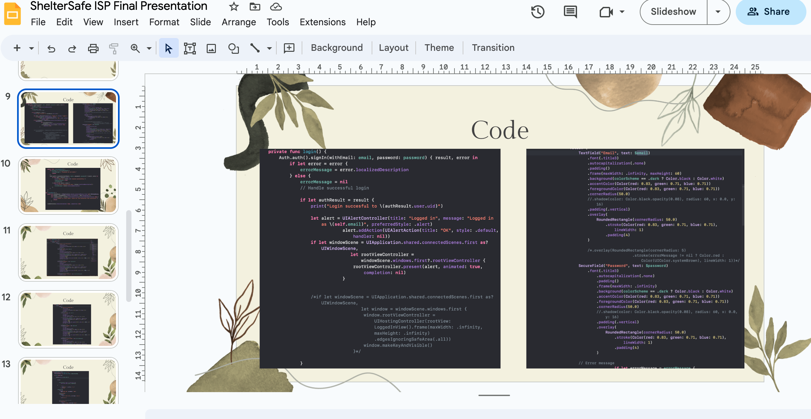
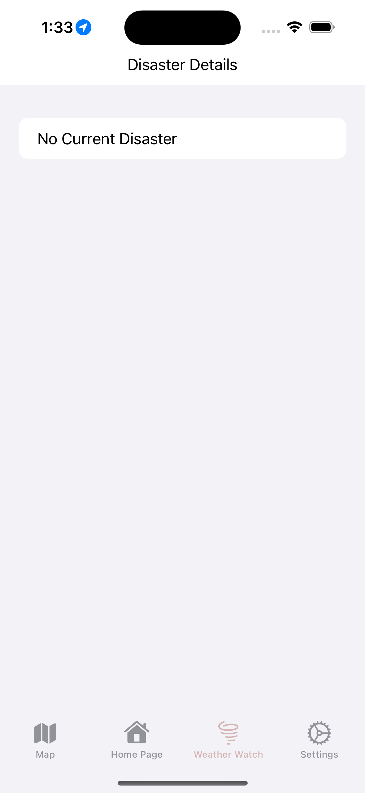
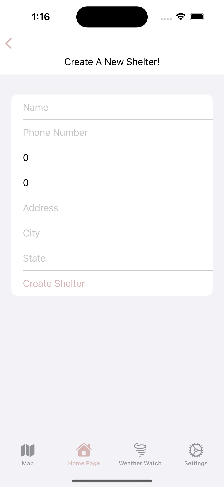
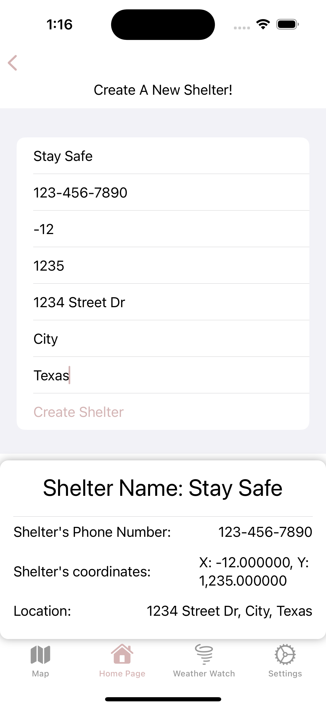
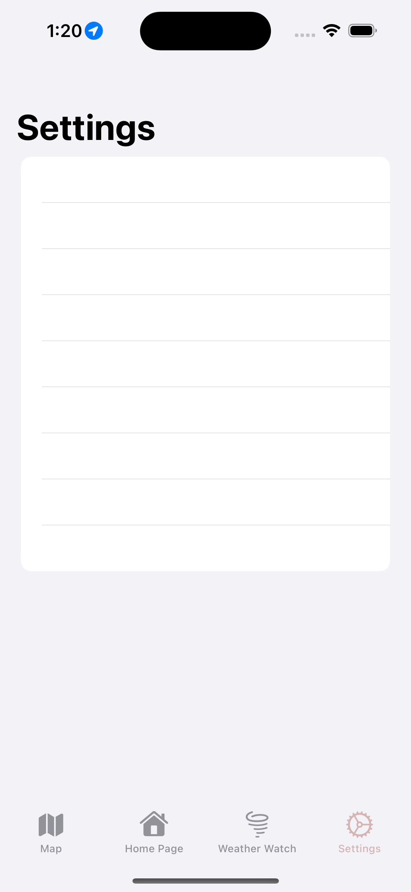
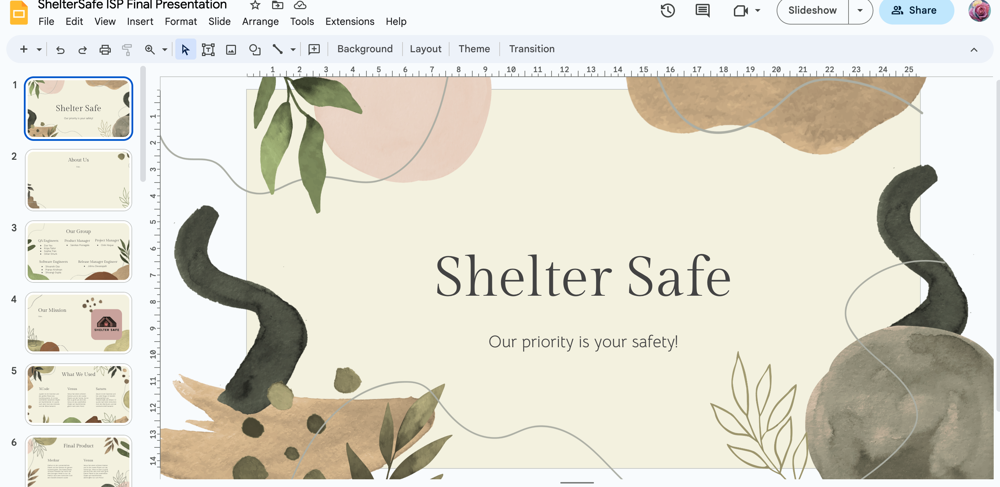
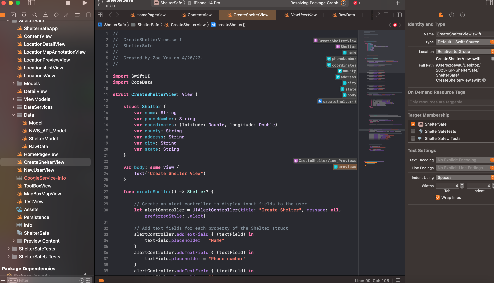

1-May-2023
Plans
I plan to work on adding more to the final presentation and adding a default text on the weather watch page.
Implement: Issue #92
Implement: Issue #82
Challenges
I was unable to implement the data into the createShelterPage so another group memember is now working on that. Instead I worked on adding a default text into the weather watch page when there is no active disaster.
Significant Acheivements
I added more the final presenation.

I added a default text to show when there is no current disaster.

24-Apr-2023
Plans
I plan to work on adding more to the final presentation and finding a way to save the data that is input into the createShelterView. I also plan to create a layout for the settings page.
Implement: Issue #81
Implement: Issue #82
Implement: Issue #91
Challenges
I was having trouble with changing the color of the cursor. The mouse cursor in the textfields would default to yellow and when I would try to change it, it wouldn't work. I was able to figure it out and change the cursor to the accent color.
Gannt Chart
Gannt Chart
Significant Acheivements
I was able to add in the code slides and some more information into the slides.
I changed the createShelterView to display the shelter and made it be connected to the login page.

This is what it looks like after create shelter button is clicked and the user's input is put in.

I created an empty settings page.

17-Apr-2023
Plans
I plan to work on the final presentation as well as creating a function that creates a new shelter object from users input.
Implement: Issue #81
Implement: Issue #82
Challenges
I am working on this with a couple of my group memebers, and we have so far been able to complete the function. However, we are now having difficulty with implementing the data of the users input into the objects.
Significant Acheivements
I was able to start the final presentation and have set up the template for what we need to add into the presentation.

This picture shows the paramaters we have created for the object which will create a shelter.

10-Apr-2023
Technical Challenges
The about us page that I was previously working was decided that it was not needed, so I have been working on expanding the contact list spreadsheet. It has proved to be a bit challenging researching different places with accessible conacts. However, that is not that big of a problem and can easily be solved with some time.
Scheduling Challenges
I have been finding it hard to find time to work on this project. There is always so much going in school that it is hard to keep up with everything. However, I have been able to make time on the weekend.
Interpersonal Challenges
I am working with a few other of my group memebers on this spread sheet and it has made the work go much faster. We are getting along and working well together!
Significant Acheivements
Contact List Spreadsheet
3-Apr-2023
Technical Challenges
We decided to replace the map we are using, map box, with another map promgram. Because of this, I have decided not to touch the program until it is completely replaced. Instead a couple of members and me are working on putting together a list of contacts and FAQ questions, or Frequently Asked Questions, that users would want to know the answers too. I have this to be a little challenging becuase it is hard to anticpate what a user may ask. It is also hard to gather information for hotlines and numbers that are readily available to call in the midst of a natural disaster. Since I am working with multiple team members it has made this job so much easier!
Scheduling Challenges
With us being in the fourth quarter of school and exam season coming up, it has been challenging to find time to work on this project. Thankfully our members have been able to work together and find the time to get multiple parts of the app done.
Interpersonal Challenges
So far our team has been communicating well with each other. We have been getting along and working hard to create succesful product.
Significant Acheivements
Contact List Spreadsheet
List of FAQ questions
27-Mar-2023
Technical Challenges
Creating the About Us page proved to be very challenging. I was unsure of where to begin with the layout. I ended up deciding to add in tabs which include a section for About Us, FAQ, and Contacts. The tabs were not showing the right content at first, but I was able to fix it by fixing the position of the.
Scheduling Challenges
We have not been communicating much because we are all busy working on our own individual parts. Some members are working together in teams and are scheudling times to work together on their own.
Interpersonal Challenges
We didn't have any interpersonal challenges, we have been working well together and have been able to accomplish multiple tasks efficiently. I have enjoyed working with my team members and we all get along fine. I am currently working with a couple of members on small tasks and I love getting to work with them!~
Significant Acheivements
Created An About Us Page
Created Tabs and Cotent in the About Us Page
20-Mar-2023
Technical Challenges
When creating the logo there were challenges with deciding on the color. We ended up deciding to give the logo some neutral tones and pink to make it feel friendly and inviting. There were also some inital challens with running and building the app. I realized that was because I was pulling from the wrong branch and was able to quickly resolve this issue.
Scheduling Challenges
We are working delligently and communicating through our messages group chat. We have been able to scheudle times to work togehter on small tasks in small groups.
Interpersonal Challenges
We have no issues and are working well together. We have been able to pull together a lot of our app these past few weeks. It has been challenging but fun to work together!
Significant Acheivements
Changed Logo Labels
Created A Home Page
Added in the App Icon
13-Mar-2023
Technical Challenges
We worked on solving our issuses with our .netrc file. Without the .netrc file you were unable to login to the api server to access the stored data, so we made sure that all of our members had that file. A couple of my group members and I worked on an MVP presentaion, which showcased the idea of our app and the parts of it.
Scheduling Challenges
We are running a bit behind on schedule. Everyone has been so busy lately there hasn't been many opportunities to find time to work on the app.
Interpersonal Challenges
We are having some communication issues. Half of our group is unsure what to do or where to start while the other half is on top of their work.
Significant Acheivements
MVP Presentation
13-Feb-2023
Technical Challenges
Rather than techincal issues, we are have a lot that we need to get done. For starters fixing the app layout, currently there are three pages: the map, settings, and a disaster status page. However, the settings and disaster page is blank or have random words on it. Some good news is that the software engineers were able to create place markers on the map. We have made a lot of progress but still have far to go.
Scheduling Challenges
We have been communicating much better through our messages group chat. Many of us have lunch at STEAM on B days, so we have started using that lunch time to work on the project. We have been able to talk through the issues of the project and figure out what we want to do next.
Interpersonal Challenges
Currently, we are still undecided on color themes, logo designs, and the style of our app. We have two logo designs and disagree on which one we want as the logo. I think to settle the issue we should take a vote. Other than this disagreement the team is working well together.
05-Feb-2023
Technical Challenges
This week we were able to set up the project on xcode for many of the members in our group. For me at first I had issues with my computer and not having enough storage, but I was able to delete some items and easily fix this proble,. When cloning the app from git hub there were inital problems with the maps we were using in the app. However, we were able to fix this problem because we found that there were issues with the netrc file we created before cloning the project. We were also able to decide on a logo, but we need to change colors.
Scheduling Challenges
We have a discord server where the group meets to work together on the project. We also have a messages group chat and an email chain where we are able to communicate. We have been working together well and collaborating without many issues.
Interpersonal Challenges
There aren't many issues within the group. Everyone is doing their role and working hard to create a succesful app.
23-Jan-2023
Technical Challenges
The issues that we have faced this week is problems with git hub. Unfortunately our README on our github disappeared. However, this issue has a simple fix, we can simply remake it. Although in the future if we have more issues wit our github it may not be so easy to redo.
Scheduling Challenges
Conitinuing with the previous journal entries we have not been able to schedule meet ups. This has to do with all of us being very busy. These upcoming months are going to be busy with test preparations or end the year exams. Finding time to have a meet up is proving to be difficut. However, we will be able to find away to have a proper meet up.
Interpersonal Challenges
There are currently no interpersonal challenges that we are facing. Everyone is getting along and working together well. I doubt there will be many issues that will arise.
16-Jan-2023
Technical Challenges
We still have the same technical challenges with the design and layout of the app. However, this has to do with a scheduling issue, we just have not have the time to meet and discuss. The other issues that I am facing is with the back end. The concept of our app is a bit challenging and will take some more research for me to know how to contribute to the programming.
Scheduling Challenges
We are having many scheduling challengs. For me personally, I have been busy and unable to attened anything we try to set up. I know we all do many after school clubs and have out of school activities which makes it challenging to find free time. However, the sooner we can get together and figure everything out the better.
Interpersonal Challenges
We have resolved our previous issue of trying to figure out roles. Currently there are no challenges or disagreements that I am aware of and everything seems to be operating smoothly. As it is only the beginning more challengs may appear along the way.
11-Jan-2023
Technical Challenges
The technical challenges that I am currently facing is figuring out a design lay out for our app. With multiple people working on the app there is bound to be disagreements. The issues that we are facing is not knowing where to start. We are unsure of what color, theme, and font to go with. We also need to figure out the amount of pages and what kind of pages we want on it. If we are productive and decisive we can solve this issue quickly and create an enticing and inviting app.
Scheduling Challenges
We have such a large groups, so there may be issues between communication and scheduling conflicts. We have created a group chat with everyone and are figuring out ways to have team meetings. However, scheduling meetings can be hard because everyone has multiple activities going on and the timing of the meetings may not work with their scedule. If we can find ways to create a set scheudle that works for everyone we can be productive and create a successful output.
Interpersonal Challenges
We are currently working on trying to assign roles to everyone. It is a bit challenging as we have such a big group, it is hard for to figure out what everyone wants to do. A challenge that we have faced is some people want to do the same role as another person or some people want multiple roles or are unsure of what they want at all. In the end, we have come to the conclusion that there will be overlap in roles and multiple people will have the same or similar jobs.
2-Jan-2023
(Software) Development Engineer:
A software engineer would have to have a solid understanding of computer science. The software engineer's job would consist of developing the programs, debugging, and testing code. Personally, I would be able to learn and gain a better understanding of programming. If I am to do this job, I would have to do more learning and research in order to reach my fullest potential in this role.
QA Engineer:
A QA Engineer is a Quality Assurance Engieer. They are in charge of testing code and finding bugs in the program. They make sure the end result meets the standards of the team and the users. I think I would do well in this role because the job does not seem difficult. The role requries someone who pays attention to details and is observant and attentive.
Project Manager:
The Project Manager is in charge of overseeing the whole operation and ensuring that everything is going according to plan. The manager consistently checks up on the team members and makes sure they are completing their tasks. The person in this role would require good communication skills and organization. I would be average in this role. I am organized and would be thorough when doing check ups. I don't find the role too complicated and think I would be decent at it.
Product Manager:
The Product Manager is responsible for understanding what the customer' want and need. The person would have to understand what success of the app looks like. I think I would do average in this role. I am able to understand how consumers think, as I am one myself, and I am able to see how succeful our app can become.
Release Engineer:
A Release Engineer is someone who makes sure that the programs are built and released without issues. They are the ones that link the different applications together through code. Similar to the QA engineer, release engineers make sure that the operation is meeting the standard of the team and the market. I would not know how to do this job, but I am able to learn how to. This role would give me the opportunity to deepen my understanding for programming.
Back
{kind=link}